ΕΛΛΗΝΟΪΤΑΛΙΚΟΣ ΠΟΛΕΜΟΣ ΚΑΙ ΕΘΝΙΚΗ ΑΝΤΙΣΤΑΣΗ
ΕΡΓΑ

Μάχη στο Τεπελένι
Λάδι σε καμβά 120*150 εκ.
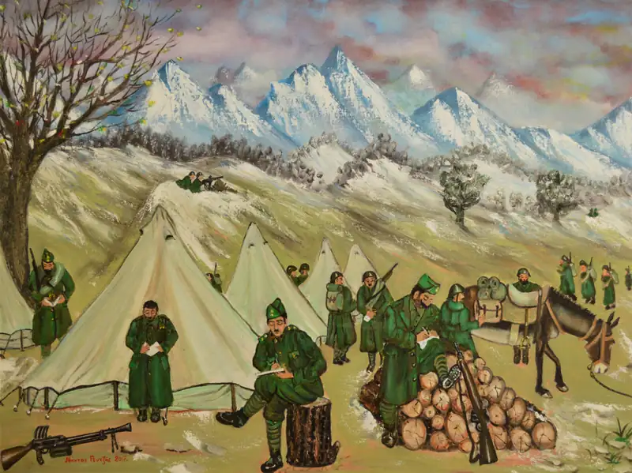
Γράμματα στο μέτωπο
Λάδι σε καμβά 60*80 εκ.
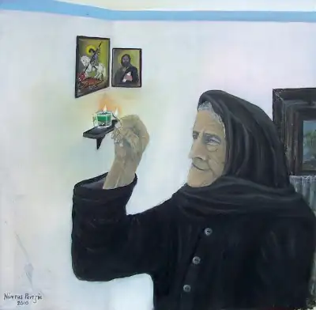
Φτερώνοντας την ελπίδα με το άναμμα του καντηλιού
Λάδι σε καμβά 50*50 εκ.
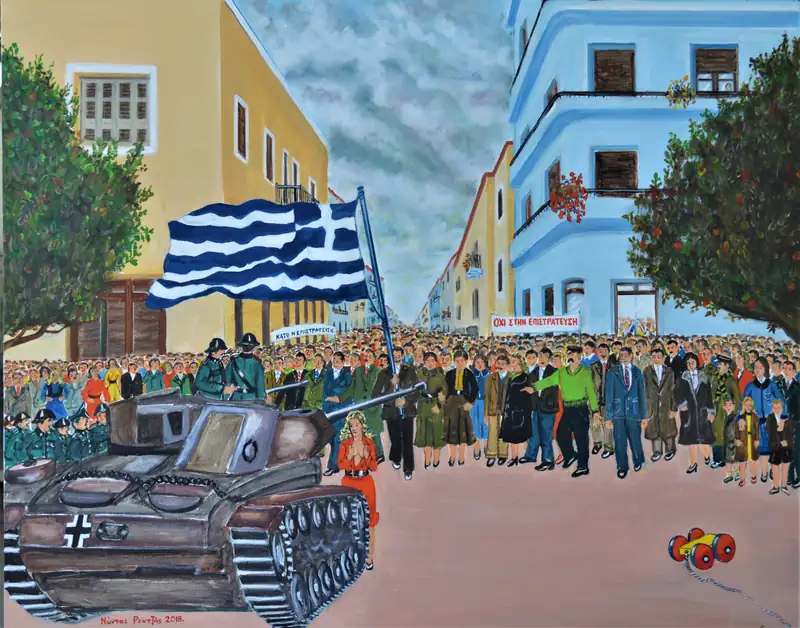
Απεργία για ματαίωση πολιτικής επιστράτευσης
Λάδι σε καμβά 80*100 εκ.
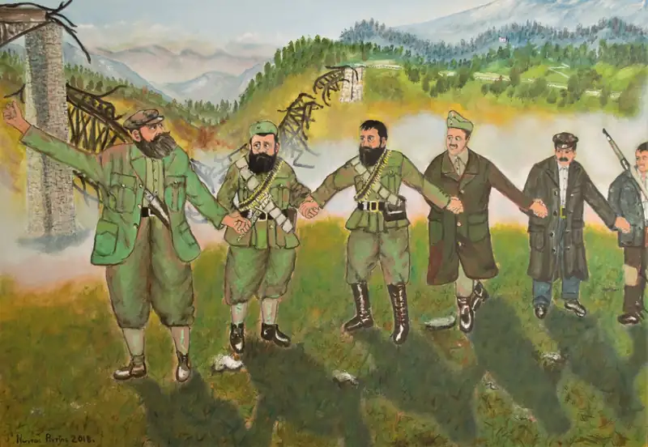
Γοργοπόταμος: Επινίκιος Χορός
Λάδι σε καμβά 70*100 εκ.
Γαρδίκι Φθιώτιδας, 26 Νοεμβρίου 1942. Επινίκιος χορός των πρωτεργατών της ανατίναξης της γέφυρας του Γοργοποτάμου. Απεικονίζονται ο Ναπολέων Ζέρβας, ο Άρης Βελουχιώτης, ο Καπετάν - Περικλής, ο Christopher Montague Woodhouse και άλλοι αγωνιστές.
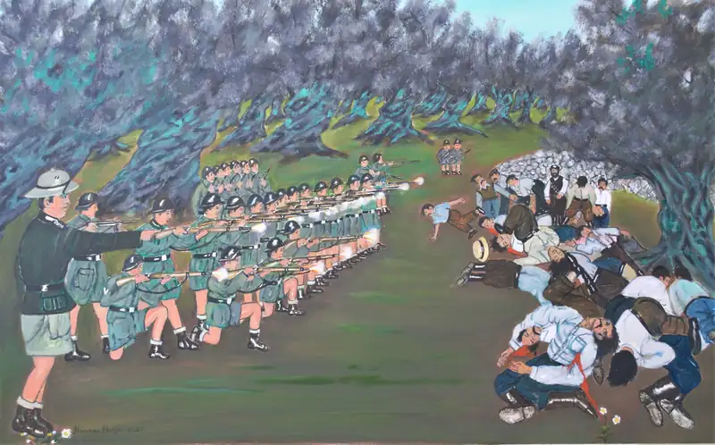
Η εκτέλεση στο Κοντομαρί των Χανίων
Λάδι σε καμβά 80*130 εκ.
2 Ιουνίου 1941, ημέρα Δευτέρα. Απεικονίζεται η εκτέλεση 25 κατοίκων του χωριού Κοντομαρί των Χανίων από τους Γερμανούς, ως αντίποινα για την ηρωική αντίσταση των Κρητών στη γερμανική εισβολή. Ο Γερμανός λοχαγός Τρέμπες δίνει στο εκτελεστικό απόσπασμα το σύνθημα της εκτέλεσης.
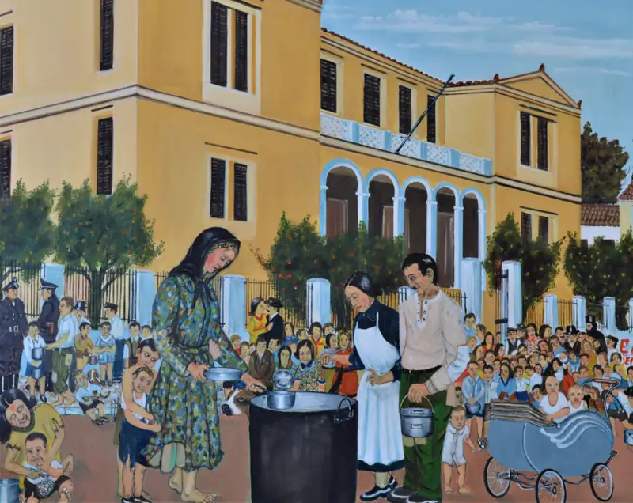
Συσσίτιο στην κατεχόμενη Αθήνα
Λάδι σε καμβά 100 *120 εκ.
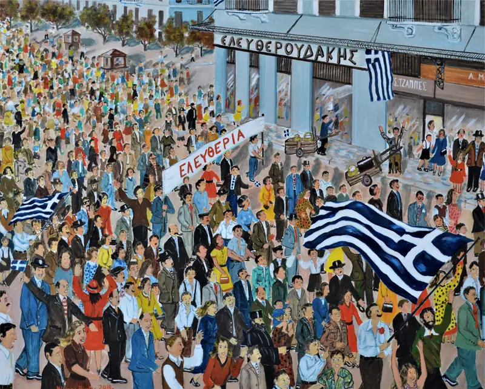
Απελευθέρωση της Αθήνας
12 Οκτωβρίου του 1944. Λάδι σε καμβά 90*110 εκ.
ΕΓΚΑΙΝΙΑ ΕΚΘΕΣΗΣ
Μουσείο της Πόλης των Αθηνών
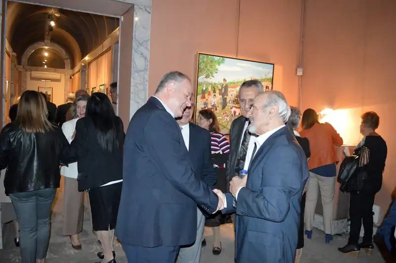
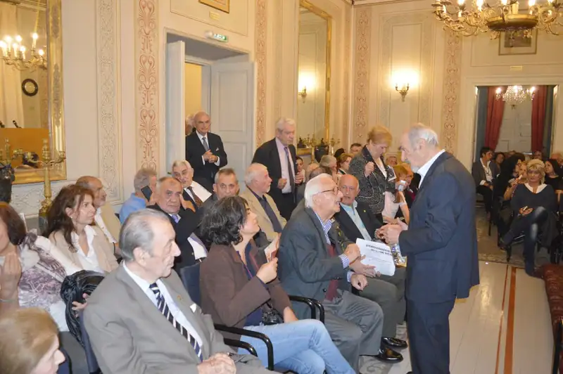
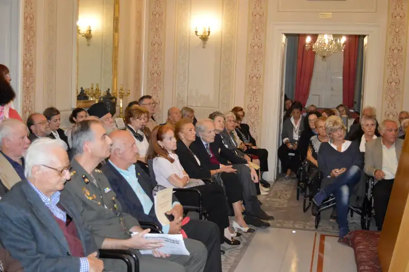
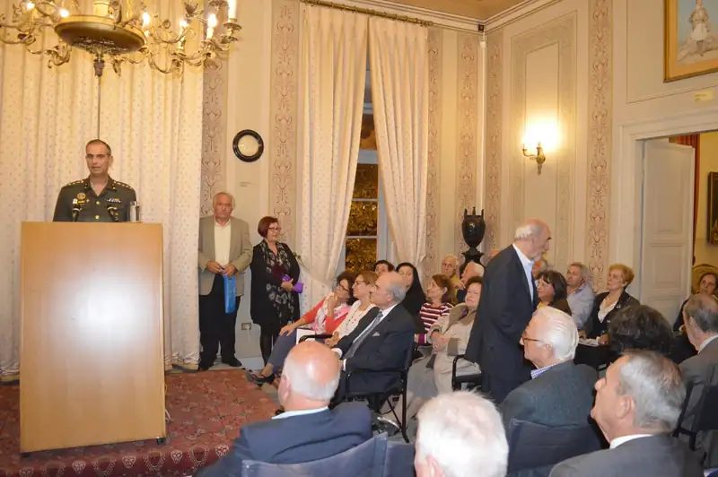
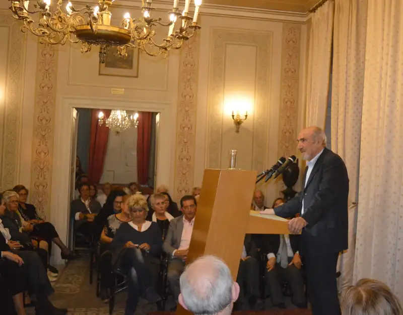
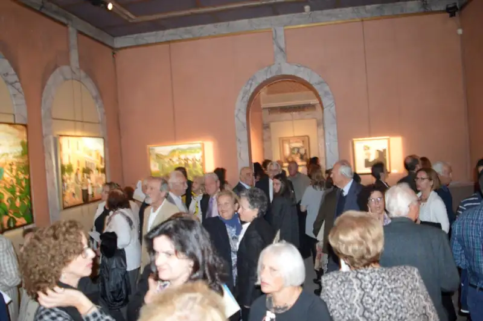
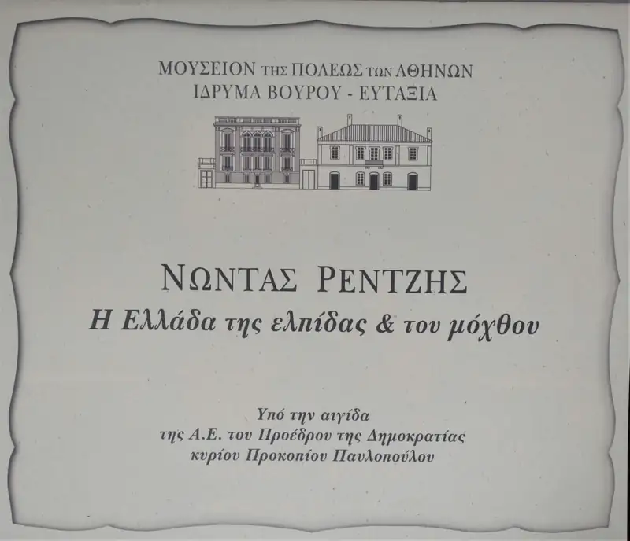
ΧΕΙΡΟΓΡΑΦΕΣ ΣΗΜΕΙΩΣΕΙΣ
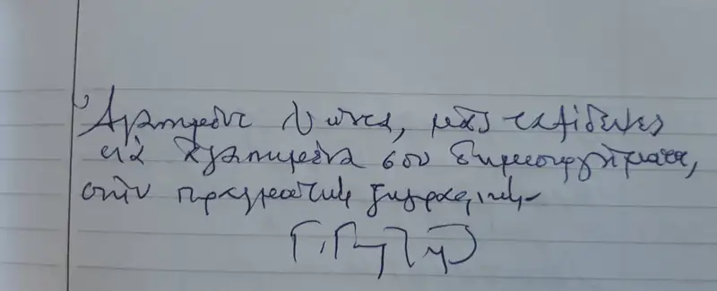
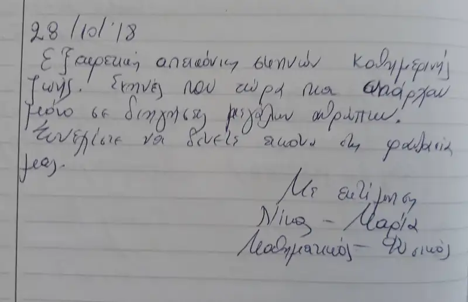
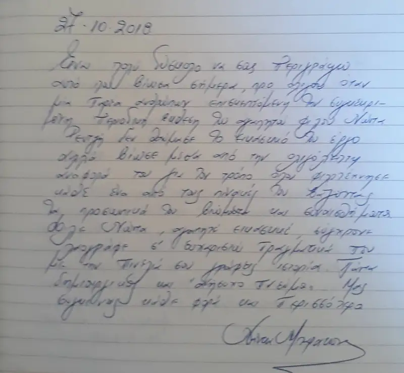